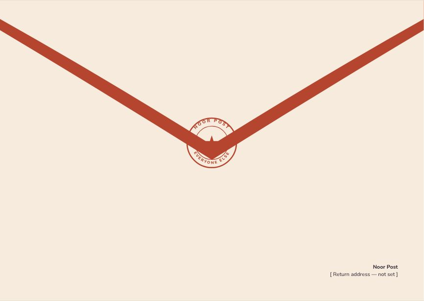
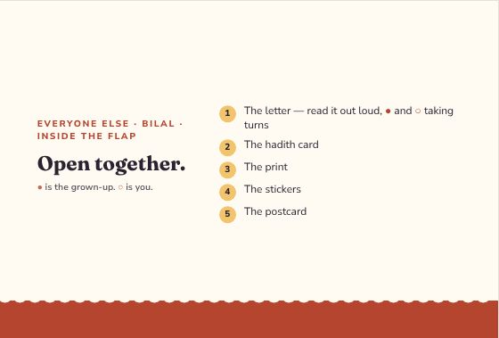
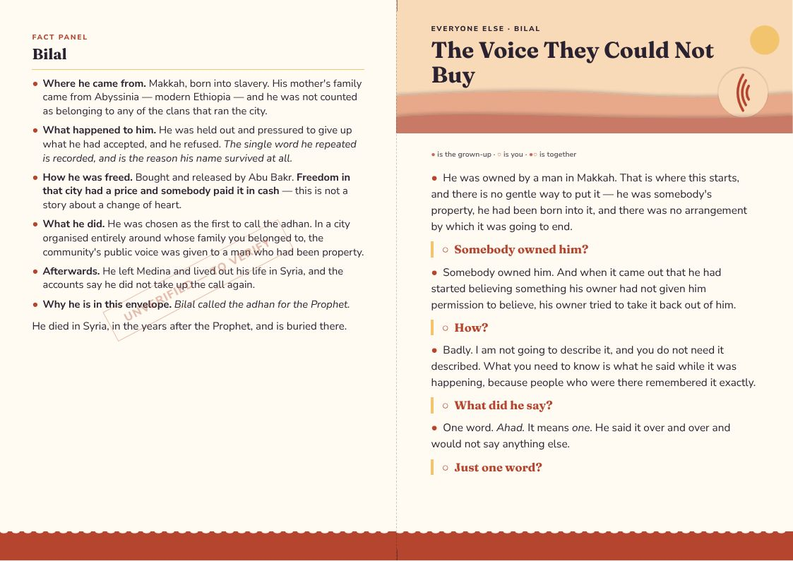
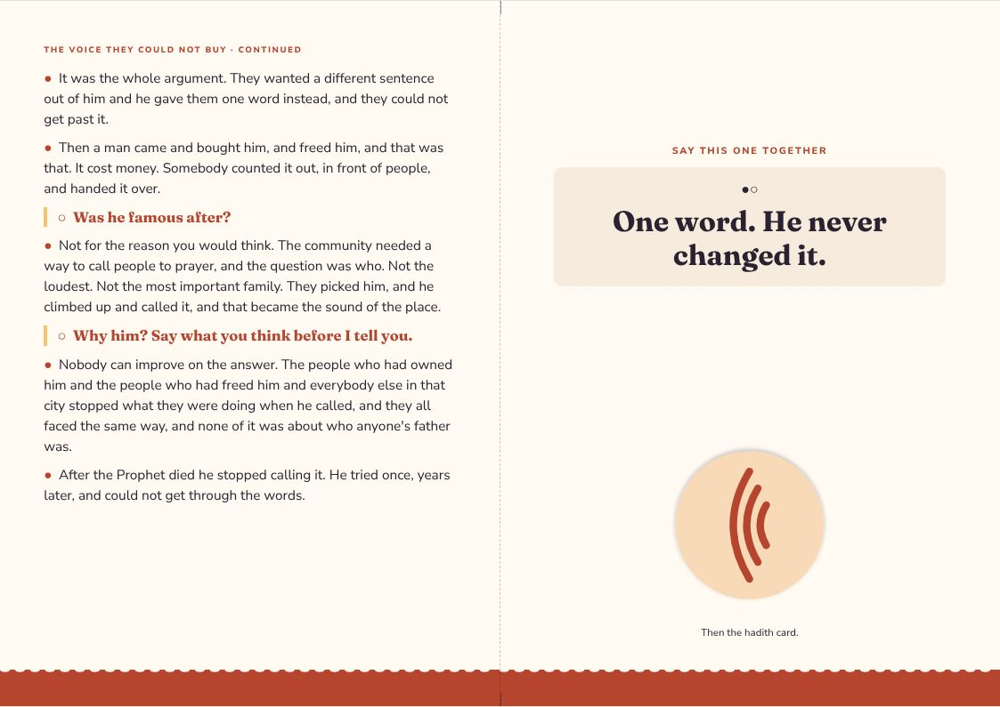
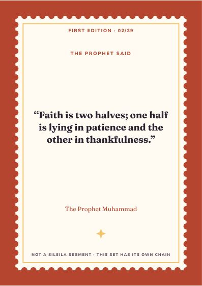
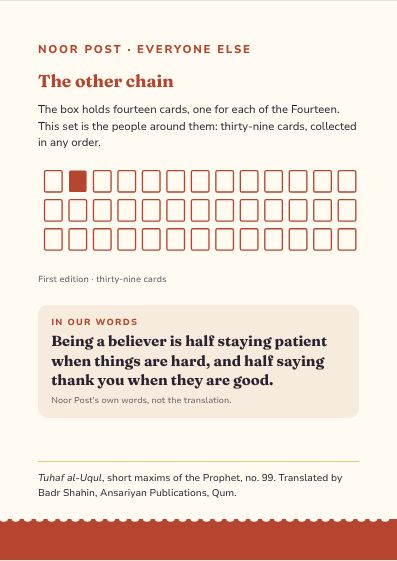
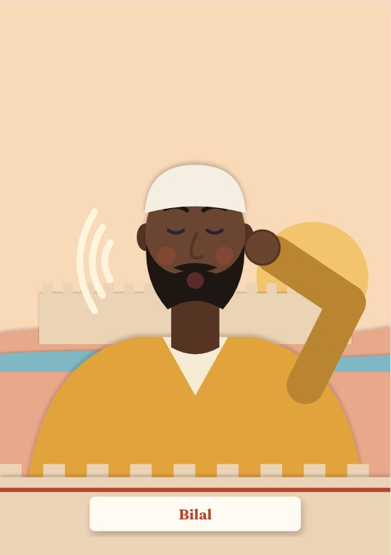
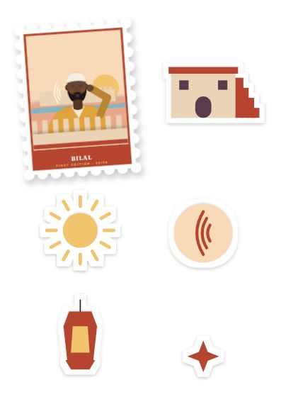
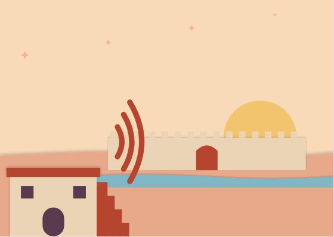

Everyone Else
Bilal
Bilal called the adhan for the Prophet.
Inside the flap
Open together.
- The letter — read it out loud, ● and ○ taking turns
- The hadith card
- The print
- The stickers
- The postcard
● is the grown-up. ○ is you.
The Voice They Could Not Buy
● the grown-up · ○ the child · ●○ together
●He was owned by a man in Makkah. That is where this starts, and there is no gentle way to put it — he was somebody's property, he had been born into it, and there was no arrangement by which it was going to end.
○Somebody owned him?
●Somebody owned him. And when it came out that he had started believing something his owner had not given him permission to believe, his owner tried to take it back out of him.
○How?
●Badly. I am not going to describe it, and you do not need it described. What you need to know is what he said while it was happening, because people who were there remembered it exactly.
○What did he say?
●One word. Ahad. It means one. He said it over and over and would not say anything else.
○Just one word?
●It was the whole argument. They wanted a different sentence out of him and he gave them one word instead, and they could not get past it.
●Then a man came and bought him, and freed him, and that was that. It cost money. Somebody counted it out, in front of people, and handed it over.
○Was he famous after?
●Not for the reason you would think. The community needed a way to call people to prayer, and the question was who. Not the loudest. Not the most important family. They picked him, and he climbed up and called it, and that became the sound of the place.
○Why him? Say what you think before I tell you.
●Nobody can improve on the answer. The people who had owned him and the people who had freed him and everybody else in that city stopped what they were doing when he called, and they all faced the same way, and none of it was about who anyone's father was.
●After the Prophet died he stopped calling it. He tried once, years later, and could not get through the words.
●○One word. He never changed it.
Letter, reverse
BILAL IBN RABAH
●Where he came from. Makkah, born into slavery. His mother's family came from Abyssinia — modern Ethiopia — and he was not counted as belonging to any of the clans that ran the city.
●What happened to him. He was held out and pressured to give up what he had accepted, and he refused. The single word he repeated is recorded, and is the reason his name survived at all.
●How he was freed. Bought and released by Abu Bakr. Freedom in that city had a price and somebody paid it in cash — this is not a story about a change of heart.
●What he did. He was chosen as the first to call the adhan. In a city organised entirely around whose family you belonged to, the community's public voice was given to a man who had been property.
●Afterwards. He left Medina and lived out his life in Syria, and the accounts say he did not take up the call again.
●Why he is in this envelope. Bilal called the adhan for the Prophet.
He died in Syria, in the years after the Prophet, and is buried there.
Hadith card · First Edition 02 / 39
Faith is two halves; one half is lying in patience and the other in thankfulness.
Tuhaf al-Uqul, short maxims of the Prophet, no. 99 · trans. Badr Shahin
A saying of the Prophet, matched to steadfastness.
The design
Everyone Else — one style for the line
Every companion envelope shares one style, so the thirty-nine belong together: each front carries its person as a stamp. Every item at true size → · Print PDF



















The artwork fixes composition, colour and medium for every item; final illustration is still to be commissioned. The fact panel is still to verify.